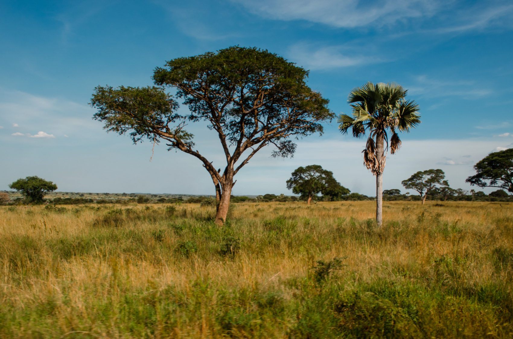
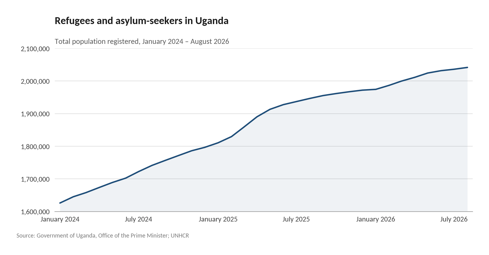
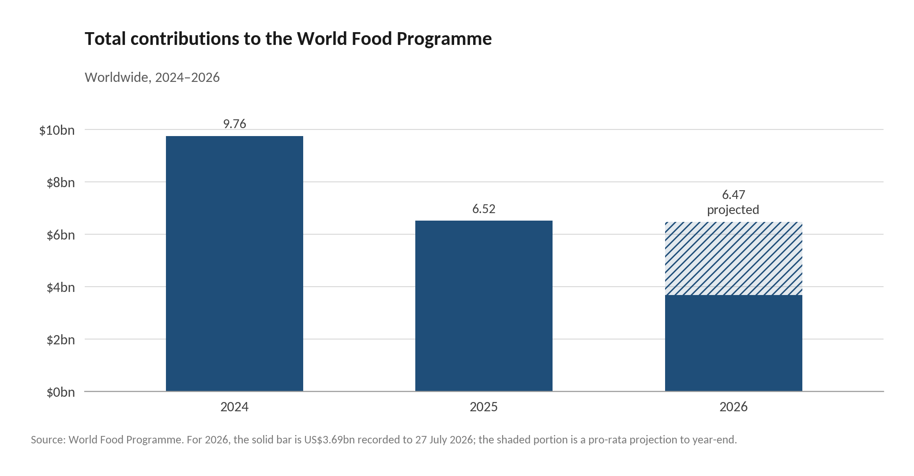
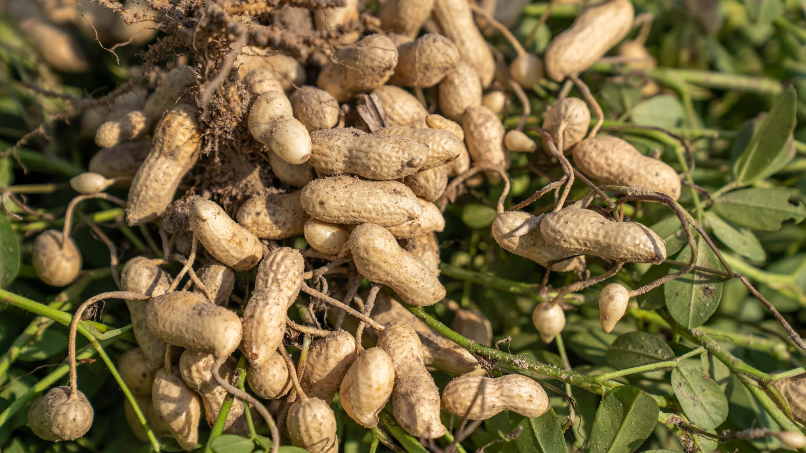
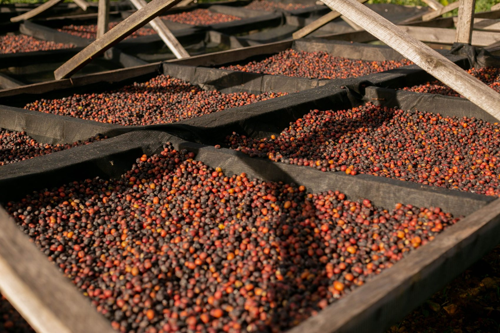
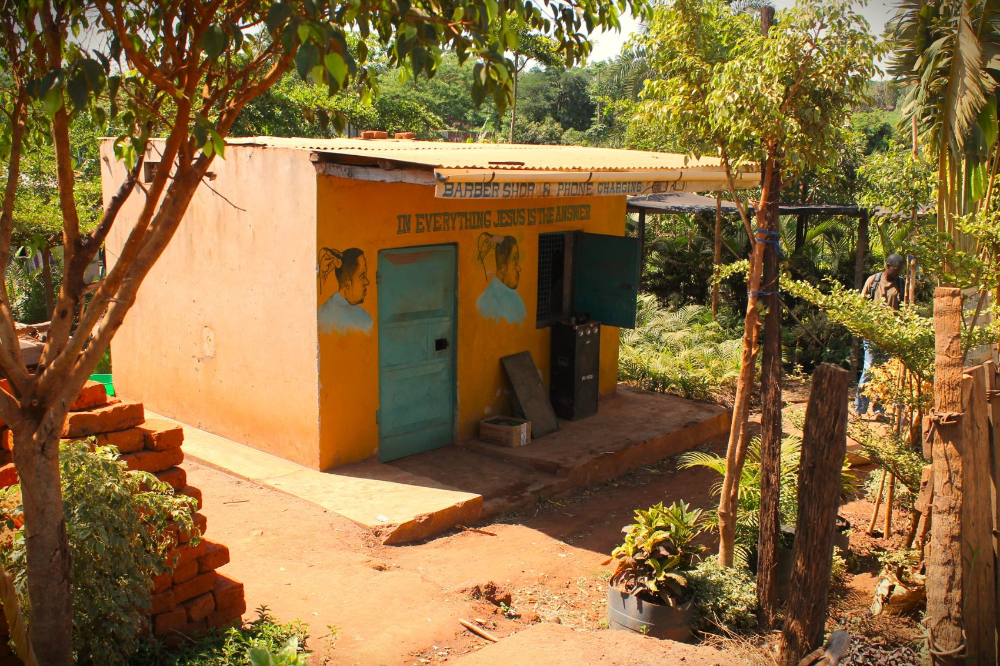

If you would rather read this as a PDF, click here.
Why this matters
September 2026In 2025, aid cuts removed almost a million refugees in Uganda from food assistance.1,2 That year, 77% of refugees said they could not meet their food needs.3 Hunger forces impossible choices on households. To cope with the lack of food,
of households cut spending on essential health services;
withdrew children from school;
engaged in at least 1 emergency coping strategy (e.g., begging, prostitution, marrying off a female child, theft).4
From Seed to Shelter aspires for no household to have to make choices from a position of extreme vulnerability. We believe that solutions exist, and scaling these cost-effectively will only grow more important as aid cuts deepen, in this community and beyond. To this end, we are inviting funders to follow our work as we identify opportunities to reduce the most suffering.
This document outlines what we have learnt so far, early opportunities identified, and ways to stay involved.
Outline

01
Executive summary
of refugees lacked sufficient food in 2025.
of households reduced the number of meals they consumed daily.5
refugees lost access to food assistance in 2025.
From Seed to Shelter started researching Nakivale, Rwamwanja, and Kyaka II settlements knowing that food insecurity was a big issue, but the more people we spoke to in these refugee settlements, the more startled we became. The coping mechanisms that our interviewees had witnessed included selling house parts, pulling children out of school to work, early marriage, transactional sex, and suicide.
The gap that we found most problematic concerns new arrivals. Core to Uganda's refugee policy is the transition from support to self-reliance. With access to land, households are expected to rebuild livelihoods and, over time, rely less on humanitarian assistance. However, the pace at which refugees are expected to make this transition no longer maps onto reality. New arrivals arrive with minimal savings, without networks, and increasingly onto plots of land too small to feed a family. Food support now ends within 3 months of arrival, while a maize harvest takes 4. This gap is both predictable and, as far as we can tell, unaddressed.
Our team’s goal is to identify mechanisms for reducing vulnerability, and then direct partners towards ways in which they can support these. We will wrap up our research by December 2026 with a visit to the settlements, and publish a cause guide to set out where capital can make a difference. We welcome introductions to funders passionate about this issue who are keen to learn alongside us.
02
Who we are
From Seed to Shelter (FSTS) began in 2025 to tackle food and nutrition challenges facing displaced people. We look for vulnerabilities overlooked by bigger organisations and work with communities to solve them.
In Greece, FSTS has been on a mission to address micronutrient deficiencies in refugee camps. Food distributed is undiverse and low-quality, leading to numerous health impacts. We built and operated a pilot farm outside of Zervou Camp to assess the cost-effectiveness of microgreens farming as a solution to this issue. Our results were positive, and we are now working with other organisations around Greece to expand this to more refugee camps.
GOALS FOR THIS PROJECT
We aim to:
- iidentify food-security issues that are pressing, neglected, and possible for us to impact;
- iidevelop an informed view on the problem, and solutions that will address these issues;
- iiicatalyse support for solutions that will reduce vulnerability.
03
Background to this project
This year, FSTS was invited by Every Shelter to explore the food situation in Nakivale Settlement, Uganda. They had witnessed the impacts of humanitarian assistance reductions on the community they served, and suggested that this was a situation where we could make an impact.
We began researching the situation in January 2026, and expanded our scope to 3 settlements in south-western Uganda: Nakivale, Kyaka II, and Rwamwanja. To date, we have conducted 23 interviews with refugee-led organisations, researchers, and other stakeholders. In April 2026, we enlisted the help of a student group from the University of Oxford, From the Roots Up, to conduct a desk review of the academic literature around refugee food systems in south-western Uganda.
We are at a juncture where we have a reasonable sense of what we know, and what we don’t. We will conduct a visit to the settlements in December 2026 to complete our research, and turn our learnings into recommendations shortly after.
04
What we've learnt so far
Context: Pressure on Uganda's refugee response is causing food insecurity to rise
Refugee arrivals in Uganda have risen sharply in recent years, largely driven by conflict in eastern DRC.6 Since January 2025, the number of refugees and asylum-seekers in Uganda has risen by 245,000 people.7
At the same time, the humanitarian system has experienced severe funding shortfalls since 2025.8


As a result, the World Food Programme (WFP) sharply reduced general food assistance in East African refugee settlements with a differentiated assistance model. Under this system, households assessed as least vulnerable were phased out of support entirely.9 In Uganda, the May prioritisation exercise reduced the number of food-assisted refugees from approximately 1.6 million to 662,000, a reduction of nearly 60%.10 Importantly, the recategorisation was driven by the funding shortfall rather than a comparable reduction in food need: many households were moved into lower categories, and some lost food assistance, without evidence that their underlying food insecurity had improved.
The impact on households has been worrying. The 2025 Food Security and Nutrition Assessment, covering refugees in Uganda’s settlements and Kampala, found that 65% lacked sufficient food, over 7 in 10 households reduced daily meals, and 1 in 4 pulled children from school.11 IPC analysis projected that over 642,000 refugees (an estimated 32% of the population analysed) would experience crisis-level acute food insecurity or worse between July 2026 and January 2027.12
more refugees and asylum-seekers in Uganda since January 2025.
fewer food-assisted refugees after the May prioritisation exercise.
refugees projected at crisis-level acute food insecurity or worse.
Interviews: what food insecurity looks like on the ground
Through our interviews, we tried to ascertain what food insecurity in Uganda's refugee settlements actually means in practice for households.
Hunger is year-round, and most acute in inter-harvest months
One grassroots organisation we spoke to surveyed 310 people in Nakivale Refugee Settlement. It found that 80% of respondents could afford only 1 meal a day for most of the year; during the lean seasons (April–May and September–October), many could not afford even that. These months are most difficult because they fall in-between the harvest cycles for the main staples.13
Outside of harvest periods, affordability of food and access to markets is particularly important. We have found that hunger has more to do with poverty than the sheer absence of food. For instance, most food sold in Nakivale is imported from further afield (e.g., Mbarara),14 but food frequently goes to waste when it cannot be sold.15
“Everyone in Nakivale is hungry right now.”
Affordability also impacts the diversity of foods that households can eat, and monotonous diets are known to cause micronutrient deficiencies.17 When families can afford food, they often stick to cheap single-grain diets.18 Some organisations suggest this is exacerbated by a lack of knowledge about the value of diverse diets,19 as well as cultural taboos restricting women and children from certain foods.20
In response to hunger in the settlements, several grassroots organisations that we spoke to run programs distributing faster-growing crops, and help individuals join savings groups to tide them through the lean period.21
Hunger is stressful, and coping mechanisms are incredibly bleak
Besides individuals passing away due to food shortages,22 hunger leaves families facing impossible choices.23 We heard the following accounts in our interviews (conversations have not been attributed due to the nature of the subject matter):
Account one
One founder of a refugee-led organisation described women “exchanging bodies to have food on the table for children”. He told us that in the month before we spoke, a man who had been removed from support was found dead, and another person had died by suicide. “There is no hope for someone who can't provide for their child.”
Account two
In a different settlement, a grassroots organiser listed the impacts of cuts he had observed: children were pulled out of school and into work, domestic violence rose, child marriage became more common, and suicides were more frequent. Others from this settlement mentioned people taking cheap labour in neighbouring towns, and stealing to survive. A long-term resident put it to us that “if you want to survive you need to hustle so much… do stuff you don't want to do.”
Account three — Kenya
In Kenya we heard from a researcher that comparable cuts to food assistance in a large settlement led to households selling the steel roofs of their houses, sending children to work for others, and resorting to transactional sex. In roughly 150 qualitative interviews conducted before assistance was cut, suicide came up once. In around 70 interviews afterwards, it came up almost every time.
Before any of the more severe coping mechanisms, households already buy cheaper and less varied food, skip meals, and sell what they own.
New arrivals are a particularly vulnerable group
Settlement populations range from refugees who have lived there for many years to households who arrived only weeks ago, and how long a family has been in the settlement strongly shapes how well it can cope.
We learnt that new arrivals face significant disadvantages. They arrive having “left everything… [and] start from zero”.24 They often arrive with little or no support network,25 minimal English (Uganda’s official language, and often needed to access services and formal work), and no source of income.26 They may also find themselves allocated land to reside on that is far from economic activity.27
“You find people with nothing: not any corn, not a single dollar.”
This is made worse by the fact that the support that new arrivals receive has dropped dramatically in recent years. New arrivals used to receive a full ration for 6 months (already shortened from 1 year) and a plot of land that was at least 30 x 30m (historically as large as 1-2 acres).29 They are now folded into the prioritisation scheme, and although classed as ‘most vulnerable’ on entry, most get removed from this category swiftly (within 3 months,30 though we have heard this is sometimes shorter in practice).31 The land they receive is also “now more like 10 x 15m”, or in some cases “30 x 30 feet”.32
05
Early thinking on the high-leverage points to explore
‘First-harvest-gap’
In line with its self-reliance policy, Uganda gives refugees the right to work and allocates households land within settlements.33 Agriculture is an important part of this model: households are expected, over time, to produce some of their own food and rely less on humanitarian assistance.
The problem is that the timeline for food assistance does not necessarily match the timeline for becoming self-reliant. New arrivals currently receive full food assistance for 3 months before being moved into the wider prioritisation system. Yet even under favourable conditions, a household that receives land and plants immediately is unlikely to harvest staple crops before around the 4-month mark.34 We call the period between the reduction in food assistance and a household’s first viable harvest the “first-harvest gap.” During this period, a household may have lost much of its food support without yet having had a realistic opportunity to replace it through its own production.
In practice, the gap may extend well beyond the theoretical 1-month window. Our interviews suggest that, in some cases, full assistance may end before the 3-month mark,35 while a first harvest can take considerably longer than 4 months. A family arriving during the dry season may have to wait months before it can plant at all.36 Families may also receive land late, lack suitable seeds or farming knowledge, or be allocated land whose productivity has declined after years of intensive cultivation.37 Unpredictable rainfall and crop pests are additional ways a harvest can be delayed, or worse — wiped out.38 Together, these factors can widen the “first-harvest gap” considerably.
There is also a more fundamental constraint: even reaching the first harvest does not necessarily mean reaching food self-sufficiency. We heard from farming experts that even the longstanding allocation of a 30 x 30m plot would not be sufficient for a family to meet all of its food needs.39 The plot must accommodate a house and toilet, on top of crops, and is shared by a family of 6, on average.40 One NGO worker told us that this amount of land might produce enough green vegetables, but not enough calories or protein to sustain a household.41
Our concern, therefore, is not simply that crops take longer than 3 months to grow. It is that food assistance can fall according to a fixed timetable, while households’ ability to replace that assistance depends on a much less predictable process. We want to understand how large this gap is in practice, which households are most exposed to it, and where support could most effectively prevent families from falling through it.

The gap, in numbers
Food availability, affordability, and waste
We heard from one interview that food in Nakivale brought by vendors often goes to waste because people are unable to afford it.42 This struck us as particularly noteworthy because it suggests the problem lies less in food availability than in affordability. Many programmes focus on increasing food production, when limited purchasing power may be the more binding constraint. It also raises a hypothesis worth testing: if vendors lost less stock to spoilage, they might be able to sell perishable food more cheaply, or sell surplus at a discount rather than discard it.
Furthermore, many grassroots programmes produce food, but struggle with spoilage. Some crops are farmed intensively, but a bumper harvest might go to waste without storage or processing options.43 Cold storage is generally difficult in Ugandan refugee camps,44 but drying foods to prolong shelf-life has had some success.45 Better storage and processing could let families stretch their harvests further into the lean season, shortening the period in which they go without enough food.
We would like to understand how accessible storage and processing facilities are to households and businesses in the settlements, and whether better access could help reduce spoilage and extend food availability into lean periods.

06
An invitation
We started this work knowing that food security was an issue. We did not expect the effects of this to be quite so stark.
We aim to complete our research by December 2026 with a visit to the sites. Following this, our goals are to identify ‘big bets’ that we believe could address acute vulnerability, and then catalyse support for these solutions.
If you’d like to support this work, here are three ways you can get involved:
One
Follow what we learn. Stay in the loop as this project develops. We intend to share our learnings and the strategies that we would recommend to address this issue.
Two
Work together. Reach out to us if there are aspects of our work that you have insight on, or would like to contribute in any way.
Three
Introduce us to others. Help put us in touch with others interested in solving this issue. We are keen to speak to local organisations, researchers, and funders.

References
- 1Kisembo, D., & Luyiga, B. (2026, March 23). Funding shortfalls push Uganda’s refugees deeper into hunger. World Food Programme. wfp.org
- 2Xinhua. (2025, May 7). WFP cuts food rations for over 1 mln refugees in Uganda amid funding shortfall. english.news.cn
- 3MoH, UBOS, OPM, MAAIF, WFP, UNHCR, UNICEF and FAO. 2025. The Food Security and Nutrition Assessment in Refugee Settlements and Kampala, 2025. data.unhcr.org/en/documents/details/121058
- 4Ibid.
- 5Ibid.
- 6Al Jazeera. (2025, October 1). Worsening violence in Congo sends a new wave of refugees into Uganda. liberties.aljazeera.com
- 7United Nations High Commissioner for Refugees. (2026). Uganda: Refugees and asylum-seekers [Data set]. Operational Data Portal. Retrieved September 13, 2026, from data.unhcr.org/en/country/uga
- 8World Food Programme. (2025, March 28). Tens of millions at risk of extreme hunger and starvation as unprecedented funding crisis spirals. wfp.org
- 9Bakewell, M., Bruni, V., & Sterck, O. (2025, November 7). Why it’s a bad idea to triage refugee food aid when everyone’s hungry. The New Humanitarian. thenewhumanitarian.org
- 10United Nations High Commissioner for Refugees. (2025). Food security dashboard: Uganda Refugee Response Plan (RRP) 2024–2025, Q2 2025 (April–June). data.unhcr.org/en/documents/download/118198
- 11MoH, UBOS, OPM, MAAIF, WFP, UNHCR, UNICEF and FAO. 2025. The Food Security and Nutrition Assessment in Refugee Settlements and Kampala, 2025. data.unhcr.org/en/documents/details/121058
- 12Integrated Food Security Phase Classification. (2026, September 7). Uganda: Acute food insecurity situation July 2026–January 2027 and projection for February–June 2027. ipcinfo.org
- 13Interview with Kura Kura Regenerative Agriculture for Refugees Initiative, 30 April 2026 (RLO in Nakivale)
- 14Interview with Starthub, 18 August 2026 (Business consultancy, worked in Nakivale)
- 15Interview with Every Shelter, 14 January 2026 (NGO in Nakivale)
- 16Ibid.
- 17Ververs, M., Muriithi, J. W., Burton, A., Burton, J. W., & Lawi, A. O. (2019). Scurvy outbreak among South Sudanese adolescents and young men — Kakuma Refugee Camp, Kenya, 2017–2018. MMWR. Morbidity and Mortality Weekly Report, 68(3), 71–75. doi.org/10.15585/mmwr.mm6803a4
- 18Interview with PhD candidate from the Norwegian University of Life Sciences, 2 February 2026 (Academic)
- 19Interview with Response Innovation Lab, 10 April 2026 (NGO)
- 20Interview with Tomorrow Vijana, 13 April 2026 (RLO in Rwamwanja)
- 21Interview with All For Integral Development, 29 April 2026 (RLO in Rwamwanja)
- 22Interview with Every Shelter, 14 January 2026 (NGO in Nakivale)
- 23Interview with Hodari Foundation, 30 April 2026 (RLO in Kyaka II)
- 24Interview with Tomorrow Vijana, 13 April 2026 (RLO in Rwamwanja)
- 25Interview with Hope and Empowerment Hub, 10 April 2026 (RLO in Nakivale)
- 26Interview with All For Integral Development, 29 April 2026 (RLO in Rwamwanja)
- 27Interview with Relevant Ventures, 25 August 2026 (Investment Company)
- 28Interview with All For Integral Development, 29 April 2026 (RLO in Rwamwanja)
- 29Interview with World Food Programme Policy Officer, 16 September 2026 (NGO)
- 30Ibid.
- 31Interview with All For Integral Development, 29 April 2026 (RLO in Rwamwanja)
- 32Interview with World Food Programme Policy Officer, 21 April 2026 (NGO)
- 33Betts, A., Chaara, I., Omata, N., & Sterck, O. (2019). Refugee economies in Uganda: What difference does the self-reliance model make? Refugee Studies Centre, University of Oxford. refugee-economies.org
- 34CHART-CR Project. (2026). Workshop report for CHART-CR Project: Communities of Hosts and Refugees Transitioning to Climate Resilience. Makerere University & University of Cambridge. chart-cr.org
- 35Interview with Hope and Empowerment Hub, 10 April 2026 (RLO in Nakivale)
- 36FEWS NET, Uganda Food Security Outlook, June 2023. fews.net
- 37Interview with World Food Programme Policy Officer, 16 September 2026 (NGO)
- 38CHART-CR Project. (2026). Workshop report for CHART-CR Project: Communities of Hosts and Refugees Transitioning to Climate Resilience. Makerere University & University of Cambridge. chart-cr.org
- 39Interview with African Women Rising, 30 April 2026 (NGO in Palabek)
- 40Office of the Prime Minister, United Nations High Commissioner for Refugees, World Food Programme, & United Nations Children’s Fund. (2023). Food security and nutrition assessment in refugee settlements, refugee host districts, and Kampala, December 2023. Government of Uganda. reliefweb.int
- 41Interview with Danish Church Aid, 8 May 2026 (NGO)
- 42Interview with Every Shelter, 14 January 2026 (NGO in Nakivale)
- 43Interview with Starthub, 18 August 2026 (Business consultancy, worked in Nakivale)
- 44Interview with PhD candidate from the Norwegian University of Life Sciences, 2 February 2026 (Academic)
- 45Interview with Response Innovation Lab, 10 March 2026 (NGO)